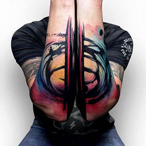
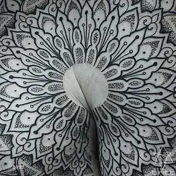
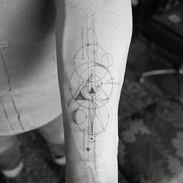
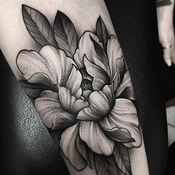
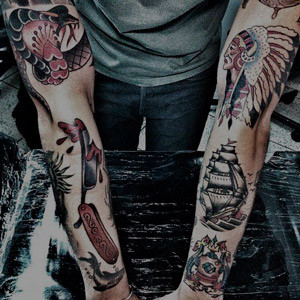
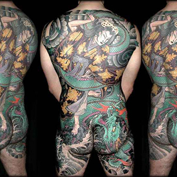

Ласкаво просимо в студію «Імператриця»!
Ми раді вас вітати на нашій сторінці. Наша студія — це унікальний простір, де кожна татуировка стає витвором мистецтва. Ми прагнемо створити атмосферу, в якій кожен клієнт почуває себе комфортно та впевнено.
Що таке татуировка?
Татуировка — це малюнок, виконаний на шкірі за допомогою спеціальної фарби. Цей вид мистецтва може приймати різні форми, розміри та стилі, дозволяючи кожному власнику висловити свою індивідуальність. Татуировки можуть нести глибокий особистий сенс, відображаючи важливі моменти життя, почуття та переконання.
Існує безліч стилів татуувань, від класичних традиційних до сучасних мінімалістичних і акварельних. Кожен стиль має свої особливості та підходить для різних особистостей. Татуировки також використовуються як спосіб самовираження — вони можуть передавати важливі повідомлення, розповідати історії та підкреслювати унікальність власника.
Важливо зазначити, що створення татуировки — це не просто процес нанесення малюнка на шкіру, але й вибір стилю, кольору та ескізу, який буде втілювати особисті цінності та ідеї. При виборі татуировки важливо враховувати не лише її зовнішній вигляд, а й сенс, який вона матиме для вас. Кожна татуировка — це частина вашої історії, яку ви вирішуєте запечатлити на своєму тілі.
Таким чином, татуировки є невід'ємною частиною культури самовираження та мистецтва, а також важливим елементом у житті багатьох людей, підкреслюючи їх індивідуальність та стиль.
Чому роблять татуировку?
Створення татуировки — це не лише модний тренд, а й спосіб вирізнитися з натовпу. Ось кілька причин, чому варто розглянути можливість татуировки:
- Самовираження: Кожна татуировка — це унікальна історія, що відображає вашу особистість, захоплення та переконання.
- Естетика: Татуировки можуть бути красивими витворами мистецтва, які прикрасять ваше тіло.
- Символізм: Багато татуировок мають глибокий сенс і можуть служити нагадуванням про важливі події або людей у вашому житті.
- Упевненість: Наявність татуировки може підвищити вашу самооцінку та впевненість у собі, підкреслюючи вашу унікальність.
Чому обирають саме нас?
У нашій студії «Імператриця» ми забезпечуємо найвищий рівень сервісу та безпеки. Довіривши нам створення вашої татуировки, ви можете бути впевнені, що отримаєте:
- Професіоналізм: Наші майстри — це досвідчені фахівці, які знають усі тонкощі татуування. Ми використовуємо лише якісні матеріали та дотримуємося всіх санітарних норм.
- Індивідуальний підхід: Ми розуміємо, що кожна татуировка — це особиста історія. Ми уважно вислуховуємо побажання наших клієнтів і допомагаємо реалізувати їх ідеї.
- Різноманіття стилів: У нашій студії доступні різні стилі татуувань — від традиційних до сучасних. Ми можемо запропонувати вам як мінімалістичні роботи, так і складні композиції.
- Чистота та безпека: Ми приділяємо особливу увагу гігієні та стерилізації інструментів, щоб гарантувати безпеку кожного клієнта.
Стилі татуувань:
Незвичайні та несподівані форми, що відображають внутрішній світ художника.

М’які, розтікаючі кольори, що створюють ефект акварельного живопису.
Стиль, що поєднує елементи механічних та біологічних форм.

Татуировки в чорносірій гамі, часто з реалістичними зображеннями.

Стиль, що використовує чорну туш для створення великих і деталізованих візерунків.

Створюється з безлічі дрібних точок, які формують візерунки та зображення.
Чисті лінії та форми, що створюють унікальні візерунки.
Техніка створення м’яких тіней та плавних переходів.
Татуировки, що нагадують друковані зображення, з детальними лініями.

Стиль, що використовує яскраві кольори та чіткі лінії, часто з елементами поп-арт.

Темні, містичні зображення, часто з використанням складних шрифтів та символів.

Татуировки, виконані з використанням лише ліній, без заповнення кольором.

Мистецтво оформлення букв і слів з унікальним стилем і шрифтом.

Прості та лаконічні дизайни, що підкреслюють суть без зайвих деталей.

Сучасна інтерпретація традиційного стилю з яскравими кольорами та складними елементами.

Яскраві, веселі та ексцентричні татуировки з елементами мультфільмів.

Класичний стиль з яскравими кольорами та впізнаваними символами, такими як серця і черепи.
Татуировки, що ґрунтуються на східній культурі, часто з зображеннями драконів і карпів.
Татуировки, що складаються зі складних візерунків та орнаментів.

Детальні та правдоподібні зображення, які виглядають як фотографії на шкірі.

Стиль, що нагадує начерк, часто з недбалою лінією та малюнками.

Яскраві та насичені кольори, часто з елементами флори та фауни.

Стиль з використанням чорних ліній і геометричних форм, натхненний культурою племен.

Комбінація різних стилів, часто з яскравими та ексцентричними елементами.

Татуировки з тонкими лініями та мінімалістичними деталями.

Яскраві татуировки, що використовують широкий спектр кольорів.

Стиль, що відображає мексиканську культуру, часто з елементами вуличного мистецтва.

Яскраві та деталізовані татуировки, часто з елементами японської культури та міфології.

Запрошуємо вас ознайомитися з нашим портфоліо, де ви можете побачити роботи наших майстрів.
Запишіться до нас!
Готові зробити крок до своєї нової татуировки? Запишіться до майстра, і ми з радістю допоможемо вам у цьому! Ваша унікальність заслуговує на те, щоб бути підкресленою саме в студії «Імператриця».
Зв’яжіться з нами!
Пишіть або телефонуйте нам у месенджер WhatsApp: